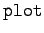

Inhalt Index DeskTop Bronstein

 Computeralgebrasysteme Graphik in Computeralgebrasystemen Graphik mit Maple
Computeralgebrasysteme Graphik in Computeralgebrasystemen Graphik mit Maple


Maple kann über -Befehle mit einer Vielzahl von Optionen Funktionen graphisch darstellen. Als Eingabefunktionen sind sowohl explizite Funktionen einer Variablen, Funktionen in Parameterdarstellung und Listen von zweidimensionalen Punkten zugelassen. Maple berechnet aus der Eingabefunktion nach bestimmten internen Algorithmen eine Wertetabelle, deren Punkte nach einem Spline-Verfahren zu einer glatten Kurve verbunden werden. Mit Hilfe einer Reihe von Optionen kann die Gestaltung der Graphik beeinflußt werden. Die Graphik selbst wird in einer eigenständigen Umgebung dargestellt und kann mit entsprechenden Systembefehlen in Arbeitsdokumente eingebunden bzw. in entsprechenden Formaten auf Drucker oder Plotter ausgegeben werden. Die Ausgabe in Dateien verschiedenen Formats einschließlich Postscript ist möglich.